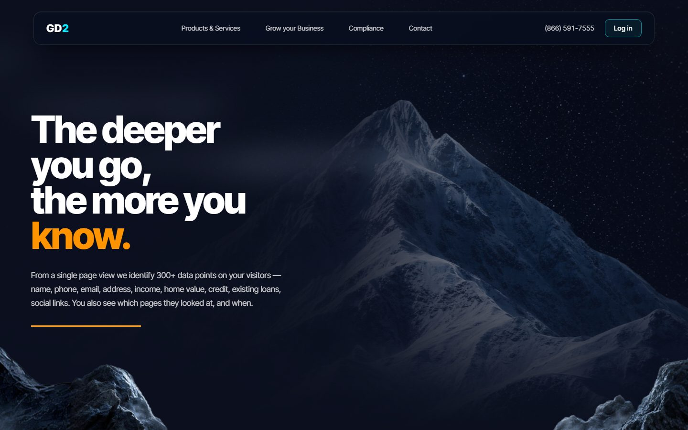
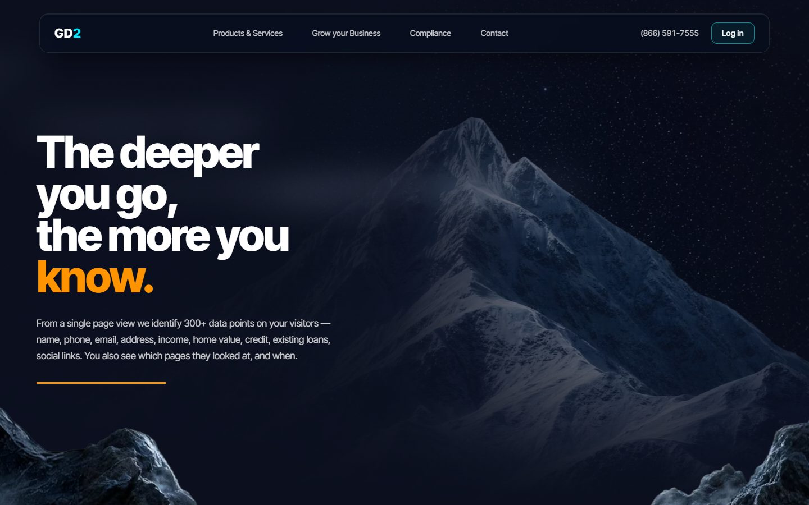
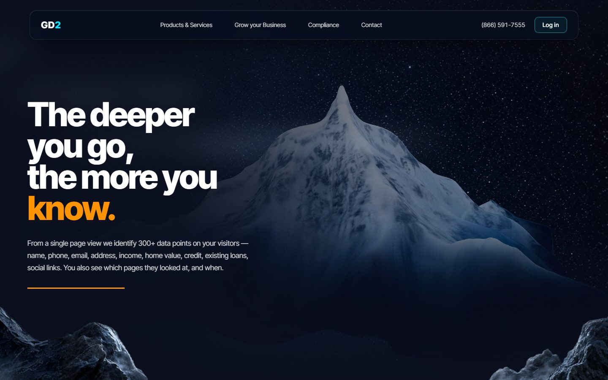
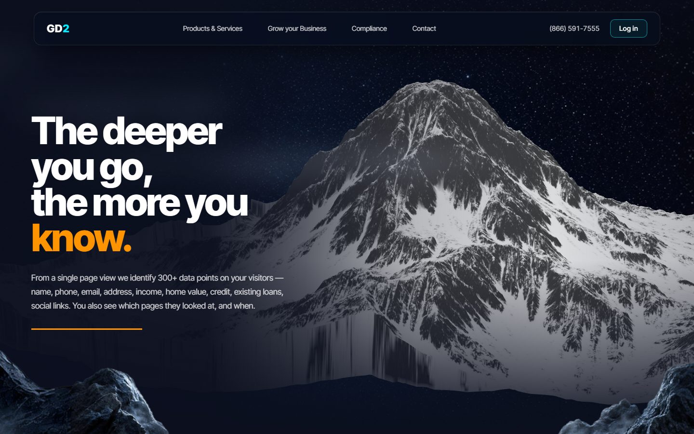
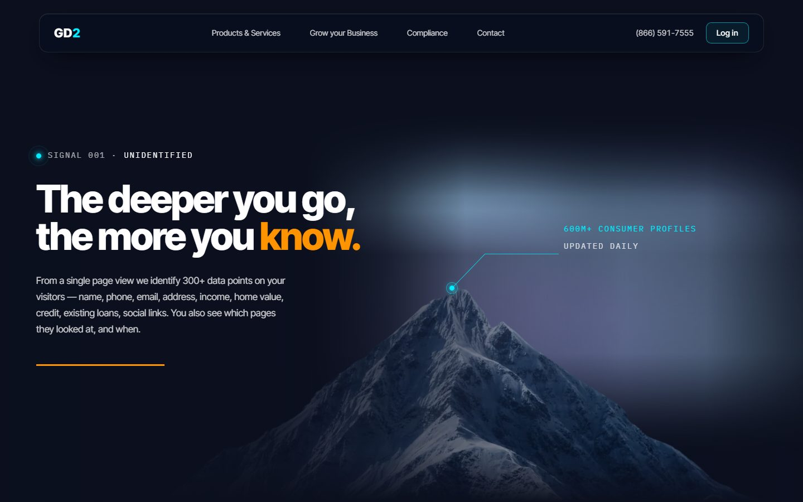
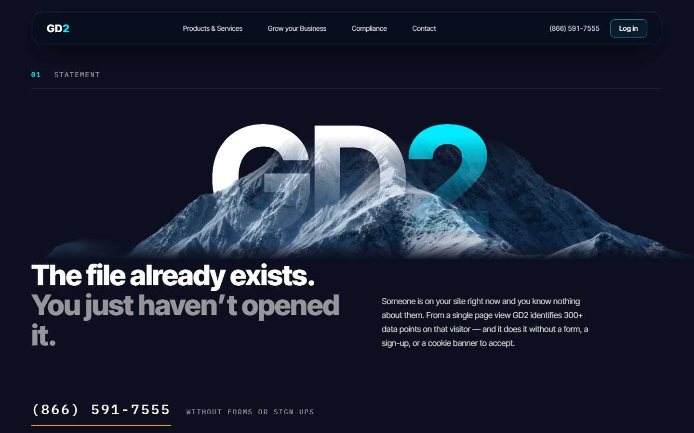
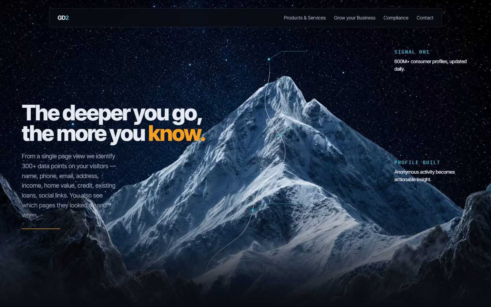
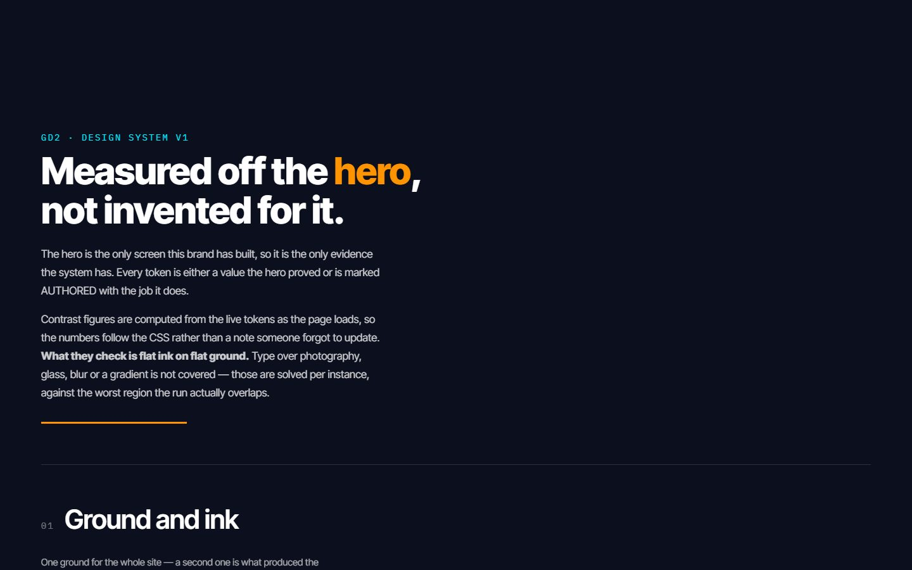

aan test 4
11 versions in this folder.
Each version says the same things and only disagrees about how. Content never changes; index4 is the reference for copy, figures and links. Descriptions from aan test 4/docs/EXPERIMENT.md.
Each card opens one version. All six labs.
-

index1
The production page. PNG hero, scrolled route, scene 2 in water.
The baseline. The design system was extracted from this one.
was index.html until aan test 4's own hub took that name
needs a server
-

hero-v2
index with three AVIF sources, nothing else.
What the AVIF plates cost the picture.
needs a server
-
index2
index with the v2 footage cut.
Which ocean grade to ship.
opens from disk
-

index3
3D mountain, full WebGL, route drawn on the terrain.
Can the PNG hero become real geometry without losing the scroll?
the only captured route that is on the rock at every frame, and the only one that disappears and reappears
needs a server
-

index4
Same as index3 with the second mountain (92-mountain).
Which of the two models carries the shot.
identical module, different mesh, zero occlusion events — the route's quality is a property of the mesh, not the algorithm
needs a server
-

index5
No canvas at all. Chaptered editorial, five acts, one pinned act.
Whether the page needs 3D to be good, or whether composition is enough.
opens from disk
-
index6
Scene 2 as a 2.5D ocean: flat plates over the real footage, depth from differing parallax rates.
Whether the WebGL diver is worth 900KB of three plus a 3.3MB rig.
opens from disk
-

index7
The vault reading. Navy alternating with a warm neutral, one governing event on the first screen, the record published as a plate. No canvas, no video, no scroll-driven anything.
Whether the direction holds when every structural decision has to name the vault entry it comes from — and whether the page still has to be dark.
the only version that broke free of the client comp's metaphor
opens from disk
-
index8
index without the diver. Ships no three.js and no 3.3MB rig at all.
Whether the swimmer in scene 2 ever earned the frame.
its header records the previous author's judgement: "index is the strongest of the seven"
opens from disk
-

index9
The GD_LAB_TEST hero brought in whole — its own palette, its own tokens, Lenis under the scroll. The near plate leaves by growing into blur instead of travelling out.
Whether a near plane should defocus rather than leave: the frame goes soft instead of emptying, so the next scene has something to emerge from.
self-contained in assets9/, fonts repointed to the local faces
opens from disk
-

Design system
The tokens, the seven type ranks and the measured contrast table, computed from the live CSS at load.
Not a version — the rulebook every version above is judged against.
opens from disk
tools/versions.json · 2026-09-06